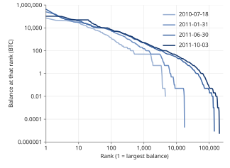
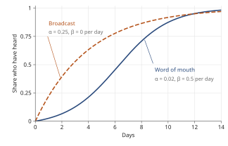
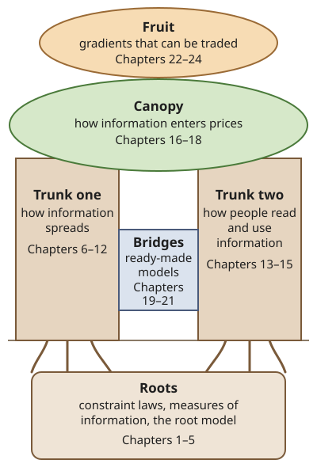

Chapter 1 Information Gradient: A Trader’s Intuition
On May 4, 1998, a biotechnology stock closed 330% above the previous Friday’s close, after a Sunday front-page story that carried virtually the same information as a report in the same newspaper the previous November. The chapter starts from that day and moves on to three tests against data: a guessing game played by 6,112 chess players (working-paper version), a reading of Bitcoin’s value from who holds how many coins, and a count of how often tariff threats were carried out. Then comes the book’s central idea, the information gradient: the information that prices have not yet reflected. The chapter shows how a trader can earn from a gradient and why she can lose even when she reads its direction right, how the gradient wears away as news spreads, and where two pictures borrowed from physics stop working. One is heat flowing from hot to cold; the other is Maxwell’s demon, an imagined being that sees single molecules and sorts them. The main text needs only high-school mathematics; the derivations sit in boxes for quantitative readers, gathered here in Section 1.11, and throughout the book the boxes can be skipped.
1.1 Two rallies in EntreMed stock
EntreMed was a small biotechnology company with the rights to commercialize a process that might cure cancer, developed by a team led by Judah Folkman, a Harvard scientist. Its share price rose sharply twice on the same scientific result. The account here follows Huberman and Regev (2001).1
On November 27, 1997, Nature published the Folkman team’s results, with the headline “Resistance-free cancer therapy” on its cover. The New York Times ran a story on page A28, and the story, CNN and CNBC all mentioned EntreMed, ticker ENMD. The stock market was closed for Thanksgiving. On Friday, November 28, ENMD closed at $15.25, up from $11.875 two days earlier, a gain of 28.4%.
On Sunday, May 3, 1998, the Times ran a second story on the research, in Huberman and Regev’s words “virtually the same information that the newspaper had reported in November, but much more prominently”, in the upper left corner of the front page. Its most enthusiastic paragraph quoted the Nobel laureate James Watson: “Judah is going to cure cancer in two years”. Watson was later reported to have denied saying this.
ENMD had closed at $12.063 on the Friday before. On Monday, May 4, it opened at $85 and closed at $51.81, a return of 330%. Excluding ENMD, the members of the Nasdaq Combined Biotechnology Index gained 7.5% on average that day, and seven of them rose by more than 25%, on volume 50 times their daily average, although a news database search found no mention of these firms from May 1 through May 4.
ENMD closed that week at $33.25; a little under half of Monday’s gain had gone (our calculation). The stock did not close below $20 until late August 1998. On November 12, 1998, the Wall Street Journal reported on its front page that other laboratories had failed to replicate the results, and ENMD fell 24% that day, to $24.875, still more than twice its price on May 1.
Huberman and Regev’s tentative reading is that the market “underreacted to the publication of the hard news of late November 1997 and overreacted to the great publicity” of the May 3 article, hard news here meaning the published scientific result itself. Some of the rise of May 4 was temporary, but in their reading “a substantial portion of it was permanent”. We read “underreacted” as resting on that lasting part: if much of a rise on no new science lasted, the November rise was too small, and the authors give no estimate of how large a correct reaction would have been (our judgment). They warn that ENMD “is merely one firm” in circumstances that “are unlikely to repeat themselves”, and the case is an extreme one (our judgment). It serves here for three questions that run through the book.
The first question is why the same information moved the price twice, the second time far more. Apart from the expert comments, what changed was how many people saw the news and where: page A28 in November, the top of the front page in May (our judgment). Economists call this kind of prominence salience, one form of limited attention: people can attend to only so much, so they miss some public news and fail to act on some of what they see (Section 1.6.5).
The second is why biotechnology stocks with no news of their own rose; Huberman and Regev write that “the optimism was contagious”, which we read as contagion of sentiment, optimism with no basis in new information passing from investors in one stock to others (our judgment; Chapter 13). The third is why the investors who knew the science did not bring the price back down. On May 10 the Times wrote that professional investors had long known of the research and “had reflected it in the pre-runup price of about $12 a share”, yet the price stayed above $20 until late August. Section 1.6.3 gives candidate answers under the name limits to arbitrage: the constraints on capital, counterparties, short selling (selling borrowed shares) and time that can keep an obvious mispricing in place. Studies of large samples find related lags between news and prices (Sections 1.6 and 1.8).2
1.2 Three tests against data
Three tests come before the definitions, each with its limits beside it. Each puts a number on something a trader has to judge: what others will guess, what a coin network is worth, and how far to believe a threat (our judgment).
1.2.1 A guessing game with 6,112 chess players
A trader who will sell soon has to guess what other traders will pay, and a guessing game tests that reasoning on its own (our judgment). Bühren and Frank (2012) ran one online: in June 2009, 6,112 chess players accepted an invitation posted on ChessBase, a chess website, to take part (working-paper version). Each stated a number between 0 and 100, and the winner was the one closest to two-thirds of the average of all the numbers. Economists call this game a beauty contest: to win, a player has to guess what the others will guess. The average guess was 32.15, so the target was 21.43 (working-paper version).3
A level-0 player, who does not think about the others at all, guesses at random, 50 on average. A level-1 player assumes that everyone else is level 0 and guesses two-thirds of 50, about 33.3. A level-2 player assumes that everyone else is level 1 and guesses 22.2, level 3 guesses 14.8, and so on toward 0 (our calculation). This ladder is the level-k model. At its end is the Nash equilibrium, a set of choices from which no one gains by changing alone: everyone guesses 0. A guess of 0 missed the target by 21.43, a level-1 guess by 11.90 and a level-2 guess by only 0.79 (our calculation): the best guess was one step deeper than the crowd’s average, and far from 0 (our judgment).
Strong players did no better: the 28 grandmasters missed the target by 20.00 on average, against 18.62 for everyone, and the authors conclude that better chess players do not look more steps ahead in this game (working-paper version).
In the cognitive hierarchy model of Camerer, Ho and Chong (2004), a player assumes that the others are spread over the levels below her own and picks her best reply to that mix, and the share of people at each level follows a Poisson distribution, a standard formula for counts whose one parameter is the average number of steps people think ahead. An average of 1.5 steps fits data from many games, and the authors called this value a good all-purpose guess, one that leaves the model with no parameter to estimate. With it, the model predicts an average guess of 33.50 and a target of 22.33 (our calculation), and the crowd’s actual average was 0.96 times the prediction (our calculation; working-paper version). Fixed in 2004, the value was not tuned to this contest, but we made the comparison after its numbers were known.4 Figure 1.1 sets the ladder, the prediction and the crowd on one line.

The prediction does less well in other crowds. In three of four contests run through newspapers or a magazine, it put the target too high, for readers of the Financial Times at 1.77 times the actual (our calculation; working-paper version); the fourth, among readers of the Danish daily Politiken, matched (note 4). Bühren and Frank note that such contests give players more time, and that they generally think one step further ahead (working-paper version). The average number of steps thus differs between groups, and predicting a new crowd needs its own average (our judgment).
Scope. One group and one contest: Camerer, Ho and Chong’s cognitive hierarchy model, with the all-purpose value they gave in 2004, an average of 1.5 steps of thinking, predicts the average guess of the 6,112 chess players in the first round of ChessBase’s online contest of 2009, and the actual average was 0.96 times the prediction (working-paper version); we made the comparison after the result was known. The average number of steps differs between groups: the same prediction put the target of a contest among Financial Times readers at 1.77 times the actual, so it cannot be said to hold for every group.
The test measured one crowd’s average guess in a game that hides no fact, so it says nothing directly about the information gradient (our judgment), though a player who guessed 0 read wrongly the crowd she faced (our judgment). In Allen, Morris and Shin’s (2006) model, where traders hold an asset for a short time, today’s price depends on what they expect, on average, tomorrow’s price to be (working-paper version), and thinking only a step or two ahead may be one reason why a price misreads news that its traders have all seen (our judgment; Chapter 21).5
1.2.2 Bitcoin’s value from its holdings
The second test predicts how far Bitcoin’s price should move from who holds how many coins, without using any price. In Cong, Li and Wang’s (2021) model, a token, a digital coin used for payments on one platform, gets its value from what its many users want to hold for making payments, and discounting future cash flows plays no part (working-paper version). From their pricing equations we derive a formula that reads only the blockchain, the public record of every transaction (our derivation).6 Rank the addresses by balance, as Figure 1.2 does for four dates, and take as the marginal user, the one who only just finds the coin worth holding, the address at the rank equal to the number of users. If users’ expectation of the coin’s rise stays the same, the network’s market value grows with what all the users hold divided by what the marginal user holds; less the growth in the number of coins, that gives the change in price.

We reconstructed every address’s balance on these dates from the full record of transactions, and fixed before seeing any result which addresses count as users and on which curve to read the ranks (our calculation).7 From July 18, 2010 to January 31, 2011, the formula gave a price rise of about 4.5 times, and the price rose about 8 times (our calculation); the actual end price was 1.84 times the predicted one. From January 31 to June 30, 2011, the formula gave a rise of about 660 times against an actual rise of about 30 times (our calculation); the actual end price was only 0.045 of the predicted one, so the prediction was about 22 times too high (our calculation). The price peak of June 8, 2011, shortly before the end of the second period, does not account for the miss (our judgment; note 7).
One possible reason, which we have not tested, is that the formula counts only coins wanted for payments, while balances also hold coins bought in the hope of a rise and coins that exchanges keep for customers (our judgment). Addresses are not people either: an exchange keeps many customers’ coins in a few addresses, and one person can use many. The test is not an estimate of an information gradient (our judgment): Bitcoin pays no cash flows, so it lacks the yardstick that Section 1.3 asks of the gradient’s undigested part.
Scope. Two periods only, both in 2010–2011. From July 2010 to January 2011 the actual end price was 1.84 times the predicted one; from January to June 2011 the prediction was about 22 times too high, the actual end price only 0.045 of the predicted one. We tested nothing after 2011.
Chapter 22 takes up crypto assets, this test among them.
1.2.3 Tariff threats and a follow-through record
A threat that costs nothing to make and nothing to drop is what economists call cheap talk: words that are free to say and can be false, so one thing a listener can judge them by is the speaker’s record of doing what he said, his follow-through record, which can be counted (our judgment). For President Trump’s cheap tariff threats recorded in the TiRADE database from January 2025 to October 2026, the record put the chance that a new threat would be carried out at about four in ten by the end (our calculation). Whether prices discounted the threats by this record, our test could not tell, since a few large days dominated it.8
The TiRADE database describes itself as listing every tariff rate President Trump threatened, announced or put in force in his second term; the version we used covers January 21, 2025 to October 9, 2026. A cheap threat is a rate threatened in a post, a speech or a statement and not signed into force, and its follow-through score is the share of its rate that a signed order put in force within 90 days and kept for the next 60. From the scores of threats whose outcome was already known, we estimated for each day the chance that a new threat would be carried out; it rose and fell without sliding steadily down (our calculation).9 Tillmann (2020) tested statements of another kind against prices: from July 2, 2018 to August 1, 2019, President Trump’s statements about the Federal Reserve lowered long-term interest rates on average, but “the impact of Trump’s statements declined over time”, though allowing for other economic news weakens that evidence for the longer maturities.10
The record measures how often one speaker’s threats came true. It does not say what prices made of them, and it is not an information gradient (our judgment).
Scope. One speaker, January 21, 2025 to October 9, 2026, the records in TiRADE version 1.5, scored by a strict rule fixed in advance. The estimate at the end is 0.404, and other readings of the scoring put it between 0.324 and 0.442. It is an estimate computed from the speaker’s own record; whether the market actually discounted the threats by it, the price test could not tell.
Chapter 15 takes up what senders of information choose to say, and returns to this record.
1.3 Information gradient and belief gap
Many traders carry a picture borrowed from physics (our analogy): heat flows from hot to cold until the temperatures are equal, and then stops. In the trader’s version, those who know something others do not trade on it, pushing the price toward what they know, until nothing is left to earn. Section 1.6 checks where the picture breaks down, which requires keeping apart who knows the news, what people believe and act on, and what the price reflects.
A contract pays $1 if a new drug passes its final round of trials (Phase III) and nothing otherwise; it trades at $0.30. Roughly, the price gives the drug a 30% chance of success. This is the price-implied probability, written : the probability used for pricing. For a yes-or-no contract, which offers a bet on every outcome, is unique only if there are no fees or other frictions; with them, is fixed only up to the interval between the bid (the best price a buyer offers) and the ask (the best price a seller accepts), and anyone using must say where in that interval it is taken. It can also contain a risk premium, the extra return demanded for bearing the risk of the whole market (Chapter 18). A single stock’s price gives less: only an expected value under the pricing probabilities, which leaves the rest of the distribution unknown (our judgment; Chapter 18).
A trader who has worked through the published trial results may put the drug’s chance of success at 60%. That number is her belief, written : what she makes of the information she holds. Two gaps follow.
- A gap between people: some have read the trial results and some have not. It drives propagation, news flowing to those who lack it by word of mouth or through the media. The informed fraction, the share of people who have heard the news, measures how far it has closed (Section 1.5).
- A gap between the trader and the price, , which this book calls the belief gap. It drives trading: whoever thinks the price too low buys, and buying lifts the price. It is the only one a trader can feel directly.
The information gradient is a quantity of the whole market: the information that the price has not yet reflected. It has two parts, drawn in Figure 1.3.
- Undiffused information: news that has not yet reached the people whose trading sets the price. This covers news known to a few, and news that is public but not yet seen by most price-setters, such as EntreMed’s science between the November report and the May front page (our judgment).
- Undigested information: news the price-setters have seen but the price has not absorbed correctly, because the market reads it wrongly.
![Figure 1.3 Two parts of the information gradient. Three bars of the same width, each split into the same three segments; a dashed box marks a segment that is missing. The top bar is all the information that anyone holds about an outcome, the middle bar the part that those who set the price have seen, and the bottom bar the part the price reflects. The two dashed segments of the bottom bar, undigested and undiffused information, together make up the information gradient. The widths of the segments are not to scale.](figures/ch01-gradient.svg)
The plainest case of undiffused information is Kelly’s (1956) gambler, who learns the results of a chance event over a private channel before they become public and can still bet at the original odds.11 The channel pays only in that window, while a gradient exists (our judgment).
The belief gap is one trader’s reading of the gradient. Read correctly, it points at the gradient; read wrongly, at an illusion (Section 1.4). The drug example is undigested information if the price-setters have read the same data and interpret it differently. Nobody has seen anything the others have not; the gap comes from interpretation, the work of fundamental investing, and it marks a gradient if her interpretation is right and the price holds no risk premium.
The definition needs a yardstick that does not depend on the price itself: cash flows, a contract’s payoff at expiry (its settlement value), or the outcome of an event. An asset with no cash flows, such as Bitcoin, lacks one, so for it the second part is defined at the level of returns (Section 22.2.3). The second part also covers only seen news read wrongly, so two things lie outside the gradient. One is mispricing that sits only in the resale price before settlement, as when those who read the news correctly dare not bet against the price because they hold for short periods and are averse to risk. The other is the resale option, the premium paid for the chance to sell later to someone more optimistic. A holder’s own optimism, measured against the correct value, does count in the second part, as seen news read wrongly, with either sign.
Prediction markets are exchanges that trade contracts like this one. Wolfers and Zitzewitz (2006) show that the price equals the traders’ average belief, weighted by wealth, if they take the price as given, have no other stake in the event and have log utility, caring only about the logarithm of their wealth (working-paper version).12 A price is calibrated if contracts traded at it pay off, on average, as often as the price says. On the Intrade exchange (Page and Clemen 2013), a price of 0.20 went with an event frequency of 15.3% and a price of 0.80 with 87.4%: unlikely events were overpriced and likely ones underpriced.13 On the Kalshi exchange, Bürgi, Deng and Whelan (2026) report that buyers of contracts costing under 10 cents lose over 60% of their money (working-paper version).14 Part of each gap may pay for frictions, such as the interest forgone on money tied up in a contract, and that part is not undigested information (our judgment); Kalshi also charges fees, so a contract must win more often than its price implies to break even (working-paper version).
Scope. The figures come from Intrade, for markets that opened between August 2002 and February 2007, and Kalshi, from 2021 through April 2025, using only prices from the last 10 days before close; the Kalshi study is a working paper. The gaps hold at the listed prices and include the cost of money tied up in a contract and fees, so they are not all mispricing (our judgment). Measured as relative entropy (Section 1.4), the cost of betting at the price when the observed frequency is the truth, they bound from below the average of the undigested part among contracts at each price, a single market’s part can be smaller, and they do so only within sampling error; averaging over prices needs the distribution of prices, and for contracts held for years the interest forgone over that time comes off first (our derivation). How much of a gap discounting explains depends on how widely traders’ beliefs are spread, which no one observes, and at discount rates of the order of 20% a year discounting cannot explain the gap within 10 days of closing (our derivation).
The size of the gradient is a growth rate. Give one trader every piece of undiffused information and let her read it all correctly; the gradient is how fast her capital would grow, on average, per bet against the price, on a logarithmic scale (the log growth rate). An actual trader holds only some pieces, her own and those passed to her. Reading them correctly, she can earn their share plus the whole undigested part; misreading costs her more.
No one can observe the gradient itself, an average taken before the news arrives (Box 1.1), but parts of it can be measured. Once fees, the bid–ask spread and, for contracts held for years, the interest forgone are taken off, a calibration curve bounds the undigested part from below on average at each price, though only within sampling error (our derivation; Chapter 18). Section 1.9 lists observable stand-ins for how far news has spread.
Nothing in involves the truth. The trader expects to gain whenever her belief differs from the price, but if her is further from the true probability than the price is, she loses on average; Section 1.4 works out when a belief gap pays.
1.4 Belief gap payoff: Kelly betting and relative entropy
Let the trader of Section 1.3, who puts the drug’s chance at 60% while the contract trades at $0.30, meet the same kind of bet again and again, independently, each time splitting all her capital in line with her belief, 60% on success and 40% on failure, and betting her winnings again. Without fees a stake on both outcomes works like cash, so her split amounts to putting about 43% of her capital into the success contract and the rest in cash (our calculation; Box 1.1). This is the Kelly criterion: betting all of one’s capital in proportion to one’s beliefs, which makes capital grow fastest over the long run when those beliefs are the true probabilities. Kelly (1956) showed that a gambler who bets this way with the true probabilities eventually gets ahead, with probability one, and stays ahead of one who bets any other fraction, though he proved it only against gamblers who split their money “in a fixed way”.15 Kelly measured growth with logarithms to base two, so it comes in bits, the unit of information that halves the possibilities; one bit per bet means that capital doubles with each bet, on a logarithmic average.
Her belief, though, need not be the truth. Let be the true probability of success, which no one sees and which can be checked only after the fact, over many similar bets. With margin-free odds, which leave the bookmaker no margin, so that the probabilities they imply add up to exactly 1, Cover and Thomas give the expected growth of the logarithm of capital per bet, in our letters, as16 where is the relative entropy, or Kullback–Leibler divergence: a measure of the inefficiency of assuming one distribution when another is true, here the cost of betting on when the truth is . It is never negative, is zero only when the two are equal, and is not symmetric, so it is not a true distance, though it can be read as one. Her growth rate is thus the price’s distance from the truth minus her own (our derivation), and if her belief equals the price, whatever the truth: with no belief gap there is no growth.
With and , a success doubles her capital and a failure multiplies it by , so bits per bet, which depends only on the true chance (our derivation; Box 1.1). is zero near (our calculation); above that she gains, and below it she loses. Typical outcomes, in the sense of the geometric mean, are these (our calculation).
- At her belief is the truth. is about bits, a factor of about 1.21 per bet and about 6.8 over 10 independent bets. The chance of being behind after those 10 bets is about one in six, so a short record cannot tell skill from luck (Chapter 24).
- At the price is the truth and she is overconfident. is about bits, a factor of about 0.83 per bet, which leaves about 16% of her stake after 10 bets.
- At the truth lies above the price, so her direction is right, yet is about bits: she bets too much for the edge she has. For any truth above the price a small enough stake gains on average, but how small depends on the truth, which she cannot see (our derivation).
In every case she feels the same gap, 0.30: a right direction is no guarantee of a gain, and a wrong reading makes information worth less than nothing (our judgment).
The formula also says what information is worth. If the price correctly reflects what the price-setters have seen, a trader who holds a truly informative signal and reads it correctly grows on average at the conditional mutual information between the signal and the outcome, what the signal adds to what the price-setters have seen (our derivation; Box 1.1). Mutual information measures how much, on average, knowing one thing reduces the uncertainty about another (Chapter 2). The value of information equals mutual information only under strict conditions: every outcome has its own bet, without fees; the odds stay at their original level whatever she learns and whatever she bets, so she is a price taker, a trader whose own trades do not move the price; she knows how her signal relates to the outcome; and the bet repeats independently, with the winnings reinvested. Measured by the growth a signal adds at unchanged prices, one of the two ways of valuing it that Chapter 4 sets out (Box 1.1), a signal is worth at most its mutual information in a general stock market: each bit “at most doubles the resulting wealth”, and Barron and Cover (1988) give an example in which a bit is available and growth does not improve at all.17
These accounts have a counterpart in information thermodynamics, the physics of turning information into work and of what that costs (our analogy).18 Maxwell’s demon was meant to show that the second law of thermodynamics, which forbids an engine working in a cycle to turn heat from its surroundings into work and do nothing else, holds only statistically. In 1929 Leo Szilard reduced the demon to a heat engine with a one-molecule gas: a partition is slipped into the box, the demon notes which side the molecule is on, and the molecule pushes the partition like a piston in a slow expansion at the temperature of the surroundings, turning heat into an equal amount of work over the cycle, in apparent contradiction to the second law. One look with two equally likely answers yields one bit of information and of work, where is the typical energy of thermal motion at temperature .
Under conditions listed in Box 1.1, the Szilard engine follows the trader’s formula unchanged: the average work extracted is times , with relative entropy in nats, the unit of natural logarithms, and now the equilibrium distribution, the chances of finding the molecule on each side when no one looks or intervenes. We obtain this from Vinkler, Permuter and Merhav’s (2016) work formula for one cycle, applied to a box that may start out of equilibrium (our derivation). A demon that uses a wrong model, believing the molecule follows when it follows , therefore extracts less than with the right model, and loses on average once that model is further from the truth than not measuring at all, (our derivation), as does a trader who overrates a signal or holds a wrong model.
The demon does not work for free. By Landauer’s principle, clearing a one-bit record that is equally likely to hold either value costs at least of work, given off as heat, though Landauer’s reasoning “gives no guarantee that this minimum is in fact achievable”.19 Bennett (1982) applied the bound to the demon: if its memory starts out blank, the measurement can in principle be made reversibly; the step that cannot be undone is clearing the memory for the next measurement, and all the work gained in the expansion must be turned back into heat to do it, so over a cycle the demon yields no net work.
The two sets of accounts line up in a dictionary (our analogy). Its first pairs follow Vinkler, Permuter and Merhav, who match the gambler with the Szilard engine term by term, with the odds read as a market price (our analogy); the last pair, for a demon that holds every measurement, is ours (our derivation; Box 1.1):
- the equilibrium distribution with the price-implied probability , as the odds match the reciprocal of the initial volumes;
- the actual distribution of the molecule’s position with the truth ;
- a measurement with a signal;
- the distribution by which the demon sets the partition with the belief , how the bets are split;
- the work extracted, in units of , with the growth of the logarithm of wealth;
- the most work that can be extracted on average after measuring with the information gradient.
The dictionary has limits (our judgment). The surroundings that supply the heat have no counterpart in the market, and nothing on the betting side plays the part of : no common temperature puts a market’s costs and gains on one scale. The equilibrium distribution responds to no one, while traders set the price and learn from it. Both sides’ results are averages, and the match between them is mathematical only. Section 1.6 takes up the other limits.
1.5 Informed fraction and the decay of the gradient
The informed fraction of Section 1.3 is written . In the root model, the book’s simplest model, whose default assumptions later chapters drop one or more at a time (Chapter 5), only the who have not heard can newly hear. They hear from an external source, such as the press, a filing or an analyst’s report, at the rate , and by word of mouth, from those who already know, at the rate . So the informed fraction grows as One message from one source is copied from person to person, so all who have heard hold the same news; the external source sends it at a constant rate, and nothing new is announced along the way (Chapter 12 drops this).
The Bass model of first purchases of new products rests on the same equation; Bass (1969) tested it on eleven consumer durables, with parameters fitted to the same sales they were judged against, and no study cited in this chapter tests the equation on news (our judgment).20 Bass read his first coefficient as reflecting innovators, who adopt independently of others; this book reads as the rate of observing an external source, and a fitted total curve cannot tell the two readings apart (our judgment; Chapter 5).
With and no one informed at the start, stays at zero: someone has to observe the news first (our derivation). With word of mouth stronger, , the number newly hearing rises, peaks and falls, so traces an S-curve (Box 1.2); with it falls from the start, as after a broadcast (Figure 1.4). In Bass’s eleven products the coefficient where stands was 9.0 to 82.4 times the one where stands, so the fitted curves of all eleven are S-curves (our inference).

The root model’s market is one contract paying a dollar if a yes-or-no fact is true, like the drug contract of Section 1.3. The informed hold the belief , the others keep their earlier belief , and no one learns from the price (Chapters 16 and 19 drop this). Under the conditions of Section 1.3 the price is the wealth-weighted average belief (Wolfers and Zitzewitz 2006; working-paper version), and the root model adds the demand of noise traders, who trade for reasons unrelated to the news. With equal wealth and the noise set aside, , so the informed trader’s belief gap shrinks with the share still uninformed (our derivation): Within the root model the trader’s picture of Section 1.3 holds (our inference): the undiffused part of the gradient goes as the news spreads, and an informed trader who learns late finds the price already near ; in bits, what she can expect to earn falls faster still (our calculation; Box 1.2).
Moving the price smoothly with the informed fraction is a modeling rule the root model chooses, and another rule could replace it; under one, the price could stay put until enough of the informed act (Section 1.6.3). The rule fits three cases best (our judgment): soft information, which is hard to quantify and needs judgment; private information, held by only some; and assets that draw little attention. For widely broadcast public news, the speed of the first price reaction is set by attention and by how fast orders are filled, and word of mouth plays no part in it, so and say nothing about it (our judgment; Chapter 5). The rule has five more limits (our judgment). It needs short selling to be possible (Chapter 20). It is one of three channels through which awareness can reach a price (Chapter 19): if only investors who know about a firm hold it, a larger investor base raises its market value, other things equal (Merton 1987; working-paper version),21 and with little or no short selling, Miller (1977) hypothesized, without testing it (our judgment), “that anything that increases investor awareness of a stock will increase its price”. It assumes one market with one public price, while in Duffie and Manso’s (2007) private auctions bids reveal information only to the bidders (Chapter 19).22 It takes noise traders’ demand to be unpredictable (Chapter 4). And it has no frictions, so the calibration gaps of Section 1.3 read as only after the cost of money tied up, fees and the bid–ask spread come off (Chapter 18).
The root model ends at time with a public disclosure, when the price jumps to the outcome, which assumes everyone pays attention. In DellaVigna and Pollet’s (2009) model, investors distracted when news arrives affect prices because traders’ dislike of risk limits arbitrage: a larger share of them shrinks the immediate response and magnifies the delayed one, leaving the combined response unchanged, and their delayed response ratio, the difference in delayed response between two signals over the difference in long-term response, is a lower bound on that share (working-paper version).23 This book therefore keeps public disclosure apart from settlement, when the contract pays out on the outcome: settlement clears all information whoever is watching, a disclosure only what is seen (our judgment).
1.6 Limits of the physical pictures
Part of both physical pictures holds (our analogy): a difference drives a flow that wears it down, as rises toward 1 and the price toward in the root model, and the demon’s accounts carry over (Section 1.4). Table 1.1 lists seven points of comparison and the chapters that take each up; at the first six the pictures fail, and at the seventh the demon has a close counterpart. At some of them the two gaps of Section 1.3 come apart: the price can move with no one told (Section 1.6.2) and stay put when many know (Section 1.6.3).
Table 1.1 The physical pictures and the information market
| Aspect | Physical picture | Information market | See |
|---|---|---|---|
| What is transported | Conserved: energy, the number of particles | Copied: telling leaves the teller’s knowledge intact | Chapters 3, 5, 6, 19 |
| How differences are evened out | By contact, toward an equilibrium distribution that responds to no one | Through the price, without contact; the participants set the price | Chapters 16, 17 |
| Whether a difference can be exploited | The demon draws heat from its surroundings and needs no counterparty | It takes capital, counterparties, short selling and time | Chapters 4, 15, 17, 19, 20, 21, 23 |
| The medium | Homogeneous mixing: any two molecules may meet, their states unrelated | A network, in which some have far more links than others | Chapters 7, 11, 19 |
| Contact and exchange | Every collision exchanges energy | What is publicly available need not be seen, and what is seen need not be used | Chapters 10, 12, 13, 15, 19, 20 |
| The end state | Settles into a fixed equilibrium; counting the demon’s memory, no net work over a cycle | The price moves toward the facts; the gradient does not vanish | Chapters 4, 16, 23 |
| The cost of a wrong reading | A demon with a wrong model extracts less work and can lose; a close counterpart | Trading on a wrong belief earns less and can lose | Chapters 2, 4, 13, 15, 24 |
1.6.1 Copyable information
Telling news costs the teller nothing, and here the heat picture fails first. By the non-rivalry law, the second of the book’s five constraint laws, passing news on leaves the teller’s knowledge intact, while a diffusing particle is gone from where it was once it moves on (Chapter 3). Each meeting of an informed and an uninformed person can therefore add an informed one, as in autocatalysis, a chemical reaction whose product speeds it up (our analogy; Chapter 5). Autocatalysis fails at two points (our judgment). People pool what they know: in Duffie and Manso’s model of information percolation, two agents who meet tell each other their types, numbers that rise with each one’s probability of the high outcome, and both end with the sum, so the average type grows exponentially (our derivation; Box 1.2).24 Others learning the news lowers its worth to a holder who keeps her position until it is public; for a holder who must sell sooner, others learning can raise its worth, since their trading moves the price her way (our judgment).
1.6.2 Information in prices
Heat conduction needs contact; news can reach the price with no one telling anyone. In Kyle’s (1985) model an insider, a trader with private information, tells no one and hides behind the random orders of noise traders, yet market makers, dealers who quote prices and take the other side of orders, set the price at the expected value of the asset given the order flow, the net of buy and sell orders, and that price takes in half of his private information in one round of trading, measured by the variance of the value left once the price is known, and all of it by the end of continuous trading (Chapter 17).25 What stays private is who holds the signal (our judgment). By the price endogeneity law, the fourth constraint law, the price, set by trading, becomes a signal to those who see it (Chapter 3), and what can be read off it counts as undigested information (Box 1.1). The demon of Section 1.4 holds every measurement itself, so its accounts say nothing about information a market must pool from many people (our judgment). In Grossman’s (1976) mean-variance model the equilibrium price summarizes all the market’s information, removing the private incentive to collect it, a result he calls not robust to noise and that Hellwig (1980) recovers only as the noise of a random supply vanishes (Chapter 16).26
1.6.3 Limits to arbitrage
The demon of Section 1.4 faces none of the limits to arbitrage named in Section 1.1: it draws work from the surrounding heat and trades with no one (Chapter 23). Ljungqvist and Qian (2016) document one way around them. Short sellers without the resources to correct a mispricing alone took a short position and then revealed their information, apparently to reach the company’s shareholders, the one group not constrained, whose selling brought the price falls; on the day of a company’s first report prices fell by an average of 8.18%, adjusted for four common factors in stock returns, in a sample of 17 short sellers and 113 US-listed companies between July 2006 and December 2011 (working-paper version; Chapters 15 and 19).27
For EntreMed (Section 1.1) there are at least three candidate answers, and Huberman and Regev test none of them (our judgment). Selling short a small biotechnology stock may have been costly or hard (Chapter 20); those who knew the science and those with capital may have been different people (Chapter 19); or arbitrageurs may have ridden a bubble, a price above an asset’s fundamental value. Abreu and Brunnermeier (2003) argue that a bubble can last although every rational arbitrageur knows the price is too high and together they could correct it, and that on parameters that meet a condition they state, arbitrageurs ride the bubble though they know it will burst. They believe their principal results would hold qualitatively in a fuller model with noisy prices, but do not prove it (our judgment; Section 21.2.2).
Profit from a gradient also needs counterparties. Milgrom and Stokey’s (1982) no-trade theorem says that in an idealized market private information alone creates no incentive to trade. Its conditions include an allocation that, judged before anyone learns anything, no trade could improve for someone without hurting someone else, rough agreement on how information should be interpreted, strict risk aversion and common knowledge, known to all and known by all to be known, and so on, that a trade is feasible and acceptable to all; real markets trade on news because some of them fail (our judgment; Chapter 4). Another is that cash flows are fixed from outside: Bond and Eraslan (2010) show that trade based purely on differences in information can arise when decision makers learn from the terms of trade, such as the price, and make real decisions that change the asset’s cash flows, as Bond, Edmans and Goldstein (2012) report (working-paper version).28
1.6.4 Propagation networks
In a gas any molecule may meet any other; people pass news along a network, in which some have far more links than others. The term of the root model rests on homogeneous mixing, which in this book has two parts: two who meet have not drawn on the same sources, and anyone may meet anyone, their states independent, which gas theory calls molecular chaos (our analogy; Chapter 19). On scale-free networks, where the number of links per node follows a power law, Pastor-Satorras and Vespignani (2001) find no epidemic threshold, no spreading rate below which an infection that can be caught again dies out: in simulations with exponent 3 and in a degree-based mean field, an approximation that groups nodes by their number of links, it persists at any spreading rate in sufficiently large networks, though at an exponentially small level when spreading is weak (Chapter 7).29 Any threshold presupposes spreaders who stop, and where it lies depends on how they stop; the root model’s spreaders never forget or stop, so there news reaches everyone in the end (our judgment; Chapter 6).
1.6.5 Limited attention
Publicly available information, which anyone could look up, need not be seen, and what is seen need not be used; in a gas, by contrast, every collision exchanges energy (our judgment). Limited attention takes at least three forms (Chapter 10): not seeing public news at all; salience, where disclosures that carry the same information can affect investors differently depending on how they are presented (Hirshleifer and Teoh 2003); and a cap on how much information a person can absorb per unit of time, which Chapter 10 calls rational inattention and Sims (2003) models as a channel of finite capacity between observations and actions.
Testing whether more investors are distracted on Fridays, DellaVigna and Pollet find for quarterly earnings announcements from January 1995 until June 2006 a delayed response of, in their round numbers, 60% of the total on Fridays and 40% on other weekdays, which in their model means that at least 60% and 40% of investors respectively were distracted (working-paper version; Section 10.2). The bound rests on their model, and the late drift could also have other causes (our judgment).30 Cohen and Frazzini (2008) expect news about related firms to reach prices faster where more mutual funds hold both firms, and trading suppliers on news about their main customers did pay more where fewer funds held both, a gap significant at the 5% level in value-weighted portfolios and not in equal-weighted ones, which the authors read as varying inattention (working-paper version; Section 10.8). We read the fund count as the overlap between those who see the customer’s news and those whose capital prices the supplier, so here the root model’s assumption that information and capital sit in the same hands fails (our judgment; Chapter 19). Hong, Lim and Stein (2000) use analyst coverage, the number of analysts who follow a stock, as a proxy for the rate of information flow, which their results suggest is especially important in propagating bad news (working-paper version; Section 15.2.2). We read analyst coverage as a proxy for the external source of Section 1.5, whose strength can differ by stock and by whether the news is good or bad (our judgment; Chapter 20).
1.6.6 Persistence of the gradient
An isolated physical system settles into equilibrium, its differences gone. Grossman and Stiglitz (1980) argue that a market cannot: if prices removed all arbitrage profits, costly arbitrage would earn nothing, so a market cannot always be in equilibrium and perfectly arbitraged when arbitrage is costly, and prices reflect the informed traders’ information only partially. Unable to prove their propositions in general, they work out an example with constant absolute risk aversion, a dislike of risk that does not change with wealth, and normal variables; there, if information is cheap enough to be worth buying when no one else has it, no competitive equilibrium exists when there is no noise or the information is perfect: the Grossman–Stiglitz paradox (Chapters 4 and 16).31 The demon’s memory account has only a weak counterpart: in a market nothing puts the cost of information and its gain on one scale, and away from equilibrium an informed trader can earn more, at her counterparties’ expense (our judgment). A better physical picture is a system held away from equilibrium by a steady drive (our analogy): noise trading keeps creating mispricing, informed trading removes it, and the cost of information sets the balance (Sections 4.5 and 4.8).
McLean and Pontiff (2016) follow 97 predictors of returns from 79 academic studies, each a portfolio that buys one extreme fifth of stocks and sells the other, in US data that end in 2013. Before trading costs (our judgment), the portfolios earn 26% less after their original samples end and 58% less after publication. The first decline is an upper bound on the effect of statistical biases, patterns that held in the original sample by chance, so publication itself lowered returns by at least about 32%. Returns after publication are higher where arbitrage costs more: portfolios concentrated in liquid stocks, or in stocks with low idiosyncratic risk, the part of a stock’s moves unrelated to the market, earn less. The opening of Chapter 23 gives the scope of these figures.32
1.6.7 Cost of a wrong belief
Here the demon picture holds. Realized growth (Section 1.4), , depends on the truth : a trader who believes 60% when the truth is the price’s 30% loses about 0.27 bits per bet, as a demon that sets the partition by the same wrong model loses work. Anyone who bought ENMD at the $85 open on May 4 had lost 39% by the close at $51.81 (our calculation).
Common mistakes make a belief gap look like a gradient (our judgment): treating old news as new, a backtest fitted to the data it is judged on as a real edge, and a rumor as first-hand information. In van Bommel’s (2003) model, an informed investor with limited investment capacity spreads imprecise rumors to followers, whose trading moves the price, and with a rumormonger known to be honest, early followers expect a profit and late followers almost none (Chapters 9 and 15). A gain, in turn, does not prove a gradient was read. In the cryptocurrency pumps that Dhawan and Putniņš (2023) study, the organizers openly declare which coins they will pump, none of 70 cases examined suggests that the coin is undervalued, and prices return to their pre-pump levels (working-paper version); early buyers gain knowing only the order in which others will buy, with no information gradient (our judgment; Chapter 4).33
1.7 Map of the book
The book is laid out as a tree in six parts (Figure 1.5).

Chapters 1–5, the roots, set out the measures and value of information, the five constraint laws that every model obeys, and the root model. In plain words, the five laws say:
- The observation law: what a person newly knows can come only from observation, though people can forget.
- The non-rivalry law: telling others leaves one’s own knowledge intact, but the state of being the only one who knows ends.
- The capacity law: the information a person can absorb per unit of time has an upper limit, and tracking anything, prices included, draws on the same budget.
- The price endogeneity law: the price is set by trading and becomes a signal to those who see it.
- The no-arbitrage law: using only publicly available information, there is no way to earn money without risk and without capital.
Chapter 3 states each law with its premises. The root model also makes default assumptions, listed in Chapter 5 and the appendix, about the information itself, its propagation, how people process it and prices: for instance, a single fact whose true value trading does not change, homogeneous mixing, unlimited attention and frictionless trading. Chapter 4 already drops some of them, and Chapters 6 to 24 each drop one or more and ask how the conclusions change.
Chapters 6–12, trunk one, ask how news spreads once the root model’s simple picture is dropped, from spreaders who forget (Chapter 6) to new announcements along the way (Chapter 12).
Chapters 13–15, trunk two, ask how people read and use information, from disagreement and copying others (Chapters 13 and 14) to what holders of information choose to tell (Chapter 15).
Chapters 16–18, the canopy, ask how information enters prices, from what traders learn from prices (Chapter 16) to what kind of probability a price is (Chapter 18).
Chapters 19–21, the bridges, hold ready-made models that join the two trunks, such as gradual information diffusion together with momentum, the tendency of past winners to keep rising and past losers to keep falling (Chapter 20); they come after the canopy because they use its tools. They also cover getting information to where the capital is (Chapter 19) and beliefs about what others believe (Chapter 21). In most bridge models the spread of information is an input fixed in advance (our judgment). Word of mouth produces it inside the model in two families. In information percolation, agents are matched at random times and pool what they know when they meet, so the spread is worked out inside the model, in Duffie and Manso’s model and, with prices, in Andrei and Cujean’s (2017) (Chapter 19). In Pedersen’s (2022) model, people update their beliefs by listening to others in their social network, with rational investors and markets added; opinions change inside the model by a fixed rule, and only the network of who listens to whom is given (our judgment).34 No bridge model joins the S-curve of trunk one to prices (our judgment). That join is the book’s open problem, a question it states without solving, taken up in Chapters 19 and 21; the three tests of Section 1.2, which return in Chapters 15, 21 and 22, do not follow news as it spreads, so none of them makes it (our judgment).
Chapters 22–24, the fruit, ask which gradients can be traded: crypto assets such as Bitcoin (Chapter 22), the decay of published anomalies (Chapter 23) and a map of the evidence with a checkup for trading edges (Chapter 24).
1.8 Evidence cited in this chapter
Most of the empirical studies this chapter cites measure how long a gap between news and prices lasted. Grouped by that time, as we read each study’s windows (our judgment), they run as follows.
- About a week. In Tetlock’s (2011) study of news about S&P 500 firms from 1984 to 2004, price reactions to stale stories, those carrying much information that has already appeared, partially reversed in the next week; where the firm had another story in the previous week, the reversal over the second to fifth trading days came to 0.27%, or 27 basis points, after adjustment for risk, while reactions to news with new earnings information did not reverse (working-paper version; Sections 10.7 and 13.6.3). Whether the reversal survives trading costs, Tetlock leaves open (working-paper version). EntreMed lost a little under half of its May 4 gain within the week (our calculation), yet stayed above $20 until late August (Section 1.1).35
- Months. DellaVigna and Pollet’s extra drift after Friday announcements, the price’s continued move in the same direction, becomes more readily apparent about 30 trading days after the announcement and keeps growing for the next 60 (working-paper version). Cohen and Frazzini’s suppliers, in customer data from 1980 to 2004, made about 60% of their response to large moves in their customers’ prices in the same month and the last 40% over the next six months (working-paper version). After the short-seller reports of Section 1.6.3, target prices fell by 21.9% over three months and by 56.8% over 12 months, net of market movements, though Ljungqvist and Qian cannot say how the short sellers chose their targets (working-paper version), and that choice may explain part of the fall (our judgment).36
- Up to two years. In Hong, Lim and Stein’s data, from 1980 to 1996, momentum ran out after about ten months among stocks with many analysts for their size but continued to about the two-year mark among stocks with few (working-paper version).
- Years. McLean and Pontiff’s published predictors (Section 1.6.6) returned more than 20 basis points a month less than in sample from a year after their samples ended until publication, stayed at that level for the first two years after publication and then fell further, in data that end in 2013.37
Four cautions apply to the whole list (our judgment). All its samples are of US stocks, the latest ending in 2013. We read several studies in working-paper versions, whose published figures may differ. None traces the S-curve of the root model; each times how a gap closed. And all found a gap; studies that found none are missing. In the terms of Section 1.3, the Friday announcements, customer news in suppliers’ prices and the slow spread of firm-specific news are undiffused information, while the reversal after stale news and the part of EntreMed’s May rally that reversed within the week look like undigested information, news seen and given too much weight (our judgment). The part of that rally that lasted may instead be undiffused, science public since November but unseen by most who set the price (our judgment). The prediction-market gaps of Section 1.3 are of another kind: within the limits of Section 18.3, they bound the undigested part from below (our derivation). Chapter 24 sorts the evidence by the two parts of the gradient.
1.9 A trader’s checklist
The six questions below examine a trading edge, each with an implication that data can test. They check the structure of an edge: none says what to buy or sell, and good answers to all six do not make a trade safe (our judgment).
- Who knows? How far has the news traveled among those whose trading sets the price, where on the S-curve of Section 1.5 does the informed fraction stand, and which drives the spread, the external source or word of mouth? Stand-ins include counts of news stories, search volume, unusual trading volume, analyst coverage and the number of funds that hold related stocks together; search volume follows those newly hearing or now paying attention and does not count how many have heard (our judgment). Testable: in Hong, Lim and Stein’s data, size for size, momentum is stronger in stocks with low analyst coverage, above all among past losers (working-paper version), and Cohen and Frazzini’s prediction that news about related firms reaches prices faster where more funds hold both firms passes at the 5% level only in value-weighted portfolios (working-paper version; Section 1.6.5).
- How much has the price already absorbed? Testable: in DellaVigna and Pollet’s model, more distracted investors mean a smaller immediate and a larger delayed response, and the delayed response ratio bounds their share from below (working-paper version; Sections 1.5 and 1.6.5).
- How fast will the gap close? If the price rule of Section 1.5 holds, the price moves in step with the informed fraction, so its drift after the news goes at the rate at which people newly hear (our derivation). The testable inference, not yet tested, is that news spread mainly by a strong external source drifts fastest at first and more slowly from then on, while news spread mainly by word of mouth, , drifts slowly, then faster, then slowly again, fastest when a fraction has heard (our inference; Box 1.2). It holds only as far as the price rule does: short selling must be possible, trading centralized with one public price, and the price must move with awareness instead of waiting until enough people act (Section 1.5). Nor does it apply to news whose arrival in prices is set by attention or by a calendar of announcements (Chapters 10 and 12).
- What will cut it off? A public disclosure reaches only those who look, while settlement pays out on the outcome whoever is watching (our judgment; Section 1.5). Testable: with limited attention, a scheduled announcement closes at once only the part of the gap that attentive investors see, and the rest comes as delayed response (our inference). In Kyle’s model, with a fixed end of trading, all private information is in the price by the end, so trading on private information ahead of a known date should leave little for the date itself (our inference).
- Can you use it? Using an edge runs into the limits to arbitrage of Section 1.6.3, and the edge shrinks as more traders act on it (our judgment). Testable: in Kyle’s model the depth of the market, the order flow needed to move the price by one dollar, is proportional to the amount of noise trading for a given amount of private information not yet in the price, so the size at which an edge can be traded should grow with trading done for other reasons (our inference; Section 17.2). After the short-seller reports of Section 1.6.3, the cost of borrowing shares for new short sales rose by 52% on average on the day of release and three months later stood 238% above its level before the release (working-paper version). After publication a predictor’s returns become more correlated with those of other published predictors, so their losses may come at the same time (our inference).38
- Are you on the informed side? Could the gap be one of the mistakes of Section 1.6.7, and who takes the other side, and why? Is skill elsewhere taken for insight into the crowd, as with the chess players of Section 1.2.1 (working-paper version)? Testable: in Tetlock’s data, reactions to stale news partly reverse within a week and reactions to new earnings information do not (working-paper version; Section 1.8); one of his signs of stale news, another story about the firm in the previous week, can be checked before trading (our judgment). For published predictors, McLean and Pontiff put the effect of statistical biases at up to 26% of the average in-sample return; a backtest of one’s own, never tested out of sample, carries no such bound (our judgment).
For quantitative readers, question 6 has a sharper form. Take as benchmark the growth-optimal strategy, the one whose capital grows fastest, among those using only publicly available information. Under the conditions of Box 1.1, with bets repeated independently, winnings reinvested and prices unmoved by one’s own orders, no strategy that also uses a signal can grow faster than that benchmark by more than the mutual information between the signal and the returns, given that information (our inference). Barron and Cover prove the bound without the conditioning, for a general stock market: side information raises the doubling rate, the best expected log growth any portfolio reaches, by at most the mutual information. A backtest that beats a robust estimate of this bound points to look-ahead bias, the use of data not yet available at the time, or to overfitting, fitting the noise of the sample (our inference); no method for that estimate is given here, and estimating mutual information can itself overfit (our judgment).39
1.10 Summary
- In Section 1.2, a model of how many steps ahead people think, with one value fixed in 2004, came close to the average guess of 6,112 chess players (working-paper version), compared after the result was known, but missed three of four newspaper and magazine contests. A prediction from Bitcoin’s holdings came within a factor of 1.84 of the price over one half-year in 2010–2011, was about 22 times too high over the next (our calculation) and is untested after 2011. One speaker’s record of carrying out tariff threats can be counted, though the price test could not tell whether prices discounted the threats by it. None of the three estimates the information gradient (our judgment).
- The information gradient, a quantity of the whole market, is the information the price has not yet reflected. Its undiffused part has not yet reached the people whose trading sets the price; its undigested part has reached them, but the price has not absorbed it correctly. A trader feels only her belief gap, , one reading of the gradient, which can be wrong.
- On average, a trader who stakes all her capital in line with her belief at margin-free odds, over independent bets with winnings reinvested, grows it at the price’s distance from the truth minus her own (Section 1.4). A gap pointing the right way can still lose, and a wrong reading makes information worth less than nothing (our judgment). A signal is worth its mutual information only under strict conditions, such as that the trader’s orders do not move the price. Under the conditions of Box 1.1 the Szilard engine yields work by the same formula (our derivation), and resetting the demon’s memory turns all the work gained back into heat (Bennett 1982).
- In the root model, the book’s simplest model, the share who have heard traces an S-curve, rising slowly, then fast, then slowly, when word of mouth outweighs the external source, and the informed trader’s belief gap shrinks with the share still uninformed (our derivation). The second rests on a price rule the model chooses, with limits of its own (Section 1.5).
- Heat flow and Maxwell’s demon show a difference driving a flow that wears it down, and the demon’s accounts carry over closely in one place only, the cost of a wrong belief. The pictures fail where news is copied, passes through prices, needs counterparties to pay, spreads through networks or goes unseen, and where the gradient persists (Table 1.1; our judgment).
- The evidence of Section 1.8 times gaps lasting from about a week to years, all in US stocks, and none of it traces the S-curve (our judgment).
- Joining the S-curve of spreading news to prices is the book’s open problem, a question it states without solving (our judgment; Section 1.7).
1.11 Two boxes for quantitative readers
Box 1.1 Belief gap, relative entropy, information gradient
All logarithms here are to base two unless written .
Setting. With success as outcome and failure as , the price-implied probabilities , , mean that a dollar on outcome pays dollars if happens. The add up to one, so the odds are margin-free, and is what Cover and Thomas call the bookie’s estimate (their ). The price is calibrated when is the true probability, or the correct probability given what the market has seen.
Betting. A strategy splits all of her capital as , , and outcome multiplies the capital by . The split returns her capital whatever happens, so with margin-free odds holding cash is itself one of these splits and betting everything restricts nothing. The split ends at times her capital after a success and after a failure, as does cash plus a stake in the success contract, which costs and pays 1 (our derivation). For and , is about 43% (our calculation).
Growth rate. With true probability , the expected growth of the logarithm of capital per period is , and with where is the relative entropy, never negative and zero only if . Cover and Thomas write , with their true distribution , bookie’s estimate and bets .40 When every term is zero, so .
Why bet one’s belief. Judged by her own belief , bets yield an expected growth of , largest at , where it is , the growth she expects (our derivation). Kelly’s gambler, whose probabilities are the true ones, likewise “ignores the posted odds in placing his bets”. If , then ; if , she pays an extra .
Numbers. For and , with in bits per bet, the multiple per bet and the geometric-mean multiple after 10 bets (our calculation):
Table 1.2 Growth at four true probabilities
| 0.60 | 0.277 | 0 | 1.212 | 6.82 | |
| 0.45 | 0.072 | 0.066 | 1.004 | 1.04 | |
| 0.40 | 0.033 | 0.117 | 0.943 | 0.56 | |
| 0.30 | 0 | 0.265 | 0.832 | 0.16 |
is zero at . Over 10 bets with successes, capital is multiplied by , which is below 1 for ; at that has probability . The table’s is the multiple at successes, the median run when is a whole number, as at (6.82); at the median run, , ends at 0.56, a loss (our calculation).
Repetition and reinvestment. If the bet repeats independently times with winnings reinvested, converges to with probability one, and no utility function is needed, since in Kelly’s words “it is the logarithm which is additive in repeated bets and to which the law of large numbers applies”. A gambler who cannot reinvest should instead maximize expected capital on each bet, so treating as the value of a one-off bet requires log utility (our judgment).
The information gradient. Let be the correct reading of what the price-setters have actually seen, the seen information , where is the state of the world, the fact to be known (here, whether the drug succeeds). is the probability under the correct model, checkable only after the fact over many similar cases and taken from no pricing model. Let be all that someone knows and the price-setters have not seen: private signals, and public news they have not yet read. A hypothetical trader who pools all of and reads it correctly holds and grows at after receiving . Since and , averaging over turns the first part into mutual information, the average relative entropy of the updated from the original distribution, and the second into (our derivation):
The first term is the undiffused information and the second the undigested information. If and a yes-or-no signal is right 80% of the time whatever the outcome, only the first term remains, about 0.236 bits per bet; at a price of 0.20 the gradient is about 0.277 bits, the extra being (our calculation). With many price-setters, is an idealization. Chapters 4 and 10 separate publicly available information (what anyone could look up), seen information and digested information (what the price has absorbed correctly); the price alone cannot tell news not seen from news seen but misused.
Four limits.
- Reading as a value requires a separate bet on every outcome (a complete market); margin-free odds that change neither with the bets, so that the trader is a price taker, nor with the signals; a known joint distribution (a correct model); and independent repetition with reinvestment, or log utility for a single bet. It is then the ex-ante value, before the signal is seen, under Chapter 4’s second definition, and equals the mutual information only if the price is also calibrated, . The first definition, the gain from the signal at the same prices, is measured against publicly available information and needs no calibrated price; the two compare directly only when that information equals . In a general stock market the first is bounded above by mutual information.
- Chapters 1–5 assume that the outcome is unrelated to the risk of the whole market, so is pure mispricing. Chapter 18 drops that assumption and splits off the risk premium as , with the market’s belief and the ratio of the price to that belief; the first term is mispricing and the second the risk premium (our derivation).
- depends on the model used to read the information, and what can be inferred from the price counts as undigested: if someone can work out the informed traders’ from the price, for instance by knowing the informed fraction, that part belongs to the second term. The root model (Chapter 5) assumes the public cannot.
- is an average taken before the news arrives and cannot be observed; a single message , once it arrives, corresponds to .
Range. Section 1.3 gives most of the range: a yardstick independent of the price, resale-price mispricing left outside, and a calibration curve that bounds the second term from below on average at each price, within sampling error (Chapter 18). A pure supply shock, such as removal from an index, carries no news about cash flows, so the first term is zero; once the assumption of limit 2 is dropped (Chapter 18), the price change it causes is risk premium and leaves no mispricing (our judgment). The gradient measures private value. Social value, the value to the economy as a whole, comes only from changed real decisions.
One holder’s share. A holder has only , including what others told her; unless the price or word of mouth pools the rest, that is all she can use. Reading it correctly, she grows on average at where is what others hold and she does not, by the chain rule (our derivation). Misreading her information as costs a further , and her expected growth turns negative when that cost exceeds her share (our derivation).
Physical counterparts. Only parts checked against the sources are listed; relative entropy and mutual information are in nats, one nat corresponding to .41
- Kelly gambling and the Szilard engine (Vinkler, Permuter and Merhav 2016). The odds match the reciprocal of the initial volumes, which equal the molecule’s probabilities, so the price corresponds to the equilibrium distribution and is calibrated automatically, . With the molecule’s side and the measurement, and with the cost of erasing memory left out, no more than can be extracted on average. The bound is reached when cycles are independent and alike and the partition is moved quasi-statically, slowly enough to stay in equilibrium, to the molecule’s probabilities given the measurement, which the demon can do only if it knows how its measurement errs. The bound is that of the second law with feedback of Sagawa and Ueda (2008). With the partition in the middle and a symmetric error rate , a cycle with a wrong measurement extracts (our derivation).
- Mismatch cost and nonequilibrium free energy. The main result of Kolchinsky and Wolpert (2017) is that a process designed for a distribution but run on the actual distribution dissipates extra work , the subscripts marking start and end. Their stands for our ; we call this extra work the mismatch cost. It is an equality when is nowhere zero, and a lower bound otherwise. Esposito and Van den Broeck (2011) show that a state out of equilibrium has more free energy than the equilibrium state; this extra free energy can be turned into work. A measurement adds (Parrondo 2023). If the equilibrium free energy is the same at start and end, and the final state is back in equilibrium whether the start was or , then a process reversible for extracts on average (our derivation), and a reversible process with rich enough control can in principle extract after the measurement at most , matching term by term (our derivation): the distribution after the measurement for , for , for .
Box 1.2 The S-curve of the root model
Bass’s equation. Bass assumes that, for someone who has not yet bought, the chance of a first purchase at time is linear in the number of previous buyers. With first purchases over the product’s life, the fraction of them made by time and , he writes where and are his coefficients of innovation and imitation; his letters mean something else outside this box. With for , for and for , multiplying by gives the root model’s equation with .
No external source. At the equation is the logistic equation , which needs a seed, (our derivation).
Solution. For , write as and integrate from : the ratio equals (our derivation). Solved for , this is Bass’s closed form in our letters:
Peak and shape. As a function of , the rate peaks at , where it equals : Bass’s cumulative sales and sales at the peak, divided by . There the ratio above equals , so the peak comes at which is positive only if , as Bass notes for his coefficients. Then is an S-curve, growing fastest before half have heard, and since grows only with the logarithm of , halving a small delays the peak by about (our derivation). If , the rate shrinks as grows and so falls from the start; for , (our derivation). Bass plots the case in his Figure 3.
An illustration. Take and per day, chosen for illustration and not estimated from data. The peak comes at days, with , and halving moves it 1.5 days later (our calculation). Under the price rule of Section 1.5 the belief gap left is of its start; with and , the growth the informed trader can expect, (Box 1.1), starts at 0.277 bits. The table follows both by day (our calculation):
Table 1.3 The illustration day by day
| Day | |||
|---|---|---|---|
| 2 | 0.07 | 0.93 | 0.86 |
| 4 | 0.21 | 0.79 | 0.60 |
| 6 | 0.45 | 0.55 | 0.28 |
| 8 | 0.71 | 0.29 | 0.081 |
| 10 | 0.87 | 0.13 | 0.015 |
| 12 | 0.95 | 0.05 | 0.0023 |
The last column falls faster because, for a small gap, goes as the square of the gap (our derivation).
Information percolation. In Duffie and Manso’s model, agents meet at random times, at a rate common to all. Two agents who meet tell each other their types, which rise with their probability of the high outcome, and both end with the sum. Relying formally on the law of large numbers, they derive how the density of types across agents changes over time. If a fraction starts with no signal and no single type is held by a positive fraction of the informed, the fraction whose type is not zero follows , the root model with and (our derivation). The evidence agents have pooled grows meanwhile: the second term of Duffie and Manso’s equation, the density convolved with itself, has first moment when the average type is , so and , exponential growth at the meeting rate (our derivation). Both steps are to be checked in the appendix (Section 19.1.1).42 The root model records only who has heard something and keeps no count of how much each has pooled.
References
Works cited in this chapter. Where the version read is not the journal version, the entry says which version was read; page numbers in the notes follow that version.
- Abreu, D., and M. K. Brunnermeier (2003). Bubbles and Crashes. Econometrica 71(1): 173–204.
- Allen, F., S. Morris and H. S. Shin (2006). Beauty Contests and Iterated Expectations in Asset Markets. Review of Financial Studies 19(3). Read as Cowles Foundation Discussion Paper 1406, March 2003, titled “Beauty Contests, Bubbles and Iterated Expectations in Asset Markets”.
- Andrei, D., and J. Cujean (2017). Information Percolation, Momentum and Reversal. Journal of Financial Economics 123(3): 617–645.
- Barron, A. R., and T. M. Cover (1988). A Bound on the Financial Value of Information. IEEE Transactions on Information Theory 34(5): 1097–1100.
- Bass, F. M. (1969). A New Product Growth Model for Consumer Durables. Management Science 15(5): 215–227. The title page prints the words in the order “A New Product Growth for Model Consumer Durables”.
- Bennett, C. H. (1982). The Thermodynamics of Computation—A Review. International Journal of Theoretical Physics 21(12): 905–940.
- Bond, P., A. Edmans and I. Goldstein (2012). The Real Effects of Financial Markets. Annual Review of Financial Economics 4. Read as NBER Working Paper 17719, December 2011.
- Bond, P., and H. Eraslan (2010). Information-Based Trade. Journal of Economic Theory 145(5): 1675–1703. Not read; cited as Bond, Edmans and Goldstein (2012) report it.
- Bühren, C., and B. Frank (2012). Chess Players’ Performance Beyond 64 Squares: A Case Study on the Limitations of Cognitive Abilities Transfer. Talent Development and Excellence 4: 157–169, as found by a search; the journal version was not seen. Read as MAGKS Joint Discussion Paper in Economics 19-2010.
- Bürgi, C., W. Deng and K. Whelan (2026). Makers and Takers: The Economics of the Kalshi Prediction Market. CESifo Working Paper 12122, version of January 2026.
- Camerer, C. F., T.-H. Ho and J.-K. Chong (2004). A Cognitive Hierarchy Model of Games. Quarterly Journal of Economics 119(3): 861–898.
- Cohen, L., and A. Frazzini (2008). Economic Links and Predictable Returns. Journal of Finance 63(4): 1977–2011. Read in the working draft of February 23, 2006.
- Cong, L. W., Y. Li and N. Wang (2021). Tokenomics: Dynamic Adoption and Valuation. Review of Financial Studies 34(3): 1105–1155. Read as NBER Working Paper 27222, May 2020.
- Cover, T. M., and J. A. Thomas. Elements of Information Theory. Wiley. First edition 1991, second edition 2006; read in the first edition, whose section, equation and page numbers the notes give.
- DellaVigna, S., and J. M. Pollet (2009). Investor Inattention and Friday Earnings Announcements. Journal of Finance 64(2). Read in the authors’ manuscript of February 2, 2008.
- Dhawan, A., and T. J. Putniņš (2023). A New Wolf in Town? Pump-and-Dump Manipulation in Cryptocurrency Markets. Review of Finance 27(3). Read in the working paper of November 16, 2020.
- Duffie, D., and G. Manso (2007). Information Percolation in Large Markets. American Economic Review 97(2), Papers and Proceedings: 203–209.
- Esposito, M., and C. Van den Broeck (2011). Second Law and Landauer Principle Far from Equilibrium. EPL 95: 40004. Read as arXiv preprint 1104.5165v2.
- Grossman, S. (1976). On the Efficiency of Competitive Stock Markets Where Trades Have Diverse Information. Journal of Finance 31(2): 573–585.
- Grossman, S. J., and J. E. Stiglitz (1980). On the Impossibility of Informationally Efficient Markets. American Economic Review 70(3): 393–408.
- Hellwig, M. F. (1980). On the Aggregation of Information in Competitive Markets. Journal of Economic Theory 22(3): 477–498.
- Hirshleifer, D., and S. H. Teoh (2003). Limited Attention, Information Disclosure, and Financial Reporting. Journal of Accounting and Economics 36(1–3): 337–386.
- Hong, H., T. Lim and J. C. Stein (2000). Bad News Travels Slowly: Size, Analyst Coverage, and the Profitability of Momentum Strategies. Journal of Finance 55(1). Read as NBER Working Paper 6553, May 1998.
- Huberman, G., and T. Regev (2001). Contagious Speculation and a Cure for Cancer: A Nonevent That Made Stock Prices Soar. Journal of Finance 56(1): 387–396.
- Jarociński, M., and P. Karadi (2020). Deconstructing Monetary Policy Surprises: The Role of Information Shocks. American Economic Journal: Macroeconomics 12(2): 1–43. Not read; cited, as the authors ask, for their series of US monetary policy surprises, used in the version they keep updated on GitHub (repository marekjarocinski/jkshocks_update_fed, commit f788aef, data under CC BY 4.0).
- Kalemli-Özcan, Ş., C. Soylu and M. A. Yildirim (2026). TiRADE: A Database of Tariff Rates in Announcements, Declarations, and Events, version 1.5. Global Linkages Lab, Brown University. Data page read on October 27, 2026.
- Kelly, J. L. (1956). A New Interpretation of Information Rate. Bell System Technical Journal 35(4): 917–926. Read in a retyped reproduction that keeps the journal’s page numbers.
- Kolchinsky, A., and D. H. Wolpert (2017). Dependence of Dissipation on the Initial Distribution over States. Journal of Statistical Mechanics: Theory and Experiment. Read as arXiv preprint 1607.00956v5.
- Kyle, A. S. (1985). Continuous Auctions and Insider Trading. Econometrica 53(6): 1315–1335.
- Landauer, R. (1961). Irreversibility and Heat Generation in the Computing Process. IBM Journal of Research and Development 5(3): 183–191.
- Ljungqvist, A., and W. Qian (2016). How Constraining Are Limits to Arbitrage? Review of Financial Studies 29(8). Read as NBER Working Paper 19834, January 2014, subtitled “Evidence from a Recent Financial Innovation”.
- Maruyama, K., F. Nori and V. Vedral (2009). The Physics of Maxwell’s Demon and Information. Reviews of Modern Physics 81: 1. Read as arXiv preprint 0707.3400v2. Maxwell’s letter of 1867, his Theory of Heat (1871) and Szilard’s paper of 1929 are described as this review and Parrondo (2023) report them; the originals were not read.
- McLean, R. D., and J. Pontiff (2016). Does Academic Research Destroy Stock Return Predictability? Journal of Finance 71(1): 5–32.
- Merton, R. C. (1987). A Simple Model of Capital Market Equilibrium with Incomplete Information. Journal of Finance 42(3). Read as MIT Sloan School of Management Working Paper 1869-87, March 1987.
- Milgrom, P., and N. Stokey (1982). Information, Trade and Common Knowledge. Journal of Economic Theory 26(1): 17–27.
- Miller, E. M. (1977). Risk, Uncertainty, and Divergence of Opinion. Journal of Finance 32(4): 1151–1168.
- Page, L., and R. T. Clemen (2013). Do Prediction Markets Produce Well-Calibrated Probability Forecasts? Economic Journal 123(568): 491–513.
- Parrondo, J. M. R. (2023). Thermodynamics of Information. To appear in the Encyclopedia of Condensed Matter Physics, second edition. Read as arXiv preprint 2306.12447v1.
- Pastor-Satorras, R., and A. Vespignani (2001). Epidemic Spreading in Scale-Free Networks. Physical Review Letters 86(14): 3200–3203. Read as arXiv preprint cond-mat/0010317v1.
- Pedersen, L. H. (2022). Game On: Social Networks and Markets. Journal of Financial Economics 146: 1097–1119.
- Sagawa, T., and M. Ueda (2008). Second Law of Thermodynamics with Discrete Quantum Feedback Control. Physical Review Letters 100: 080403. Read as arXiv preprint 0710.0956v3.
- Sims, C. A. (2003). Implications of Rational Inattention. Journal of Monetary Economics 50(3): 665–690.
- Tetlock, P. C. (2011). All the News That’s Fit to Reprint: Do Investors React to Stale Information? Review of Financial Studies 24(5): 1481–1512. Read in the working paper of February 2008.
- Tillmann, P. (2020). Trump, Twitter, and Treasuries. Contemporary Economic Policy 38(3): 403–408.
- van Bommel, J. (2003). Rumors. Journal of Finance 58(4): 1499–1520.
- Vinkler, D. A., H. H. Permuter and N. Merhav (2016). Analogy Between Gambling and Measurement-Based Work Extraction. Journal of Statistical Mechanics: Theory and Experiment: 043403. Read as arXiv preprint 1404.6788v3.
- Wolfers, J., and E. Zitzewitz (2006). Interpreting Prediction Market Prices as Probabilities. NBER Working Paper 12200, April 2006; no journal version was found.
Notes
1. Huberman and Regev (2001), Journal of Finance 56(1), pp. 387–396, read in the journal version. The company, the coverage of November 1997 and May 1998, ENMD’s prices and the quotations from the Times are in §II, pp. 390–391, and the title of the November 1997 Times story, “Tests on mice block defense by cancer,” and its page in their references, p. 396. The introduction, p. 388, covers the index average and the seven other biotechnology stocks, the Wall Street Journal report and the price after it, and, with p. 391, the authors’ reading and caveats; §III, p. 392, the news search and the contagion of optimism.
2. The lags are a weaker immediate and a larger delayed price response to earnings announced on a Friday (DellaVigna and Pollet 2009; working-paper version), suppliers’ prices that take in news about their main customers only with a lag (Cohen and Frazzini 2008; working-paper version), and returns to published anomalies, patterns that predict which stocks do better, which fell after publication but did not disappear, in US data that end in 2013 (McLean and Pontiff 2016). DellaVigna and Pollet (2009) and Cohen and Frazzini (2008) are cited here from their abstracts, in the versions read, the authors’ manuscript of February 2, 2008, and the working draft of February 23, 2006; the Journal of Finance versions were not checked. McLean and Pontiff (2016), Journal of Finance 71(1): the decline after publication is in the abstract, p. 5, and on p. 7, where the 97 predictors are also given; the data, from the CRSP database, on p. 9; the end of the sample with Table I, p. 11. CRSP is the database of stocks listed on US exchanges; the paper does not itself say “US”.
3. Bühren and Frank (2012) were read in MAGKS Joint Discussion Paper in Economics 19-2010; the 2012 journal version was not checked, and the page numbers follow the working paper: the experiment, its rule, the average, the target and the Nash equilibrium are in §3.1, p. 8; the grandmasters, whose average guess was 32.96, on p. 9; the distances from the target on p. 10; the conclusion on steps of reasoning in §4, p. 16. The four newspaper and magazine contests and the remark on newspaper players are in their footnote 13, p. 8, which cites other authors’ reports; we have not read those. The players answered an open invitation, so they chose themselves. Preliminary figures that the authors posted on the ChessBase website on July 29, 2009 differ slightly from the paper’s; we use the paper’s.
4. Camerer, Ho and Chong (2004), Quarterly Journal of Economics 119(3), pp. 861–898, read in the journal version: the model is summarized in the abstract, p. 861, and the Poisson distribution is introduced in §I, p. 863, which also reports a median estimate of 1.61 across 24 beauty-contest data sets; the high values for newspaper-contest entrants are in §IV.A, p. 876; the all-purpose value and the value of the equilibrium’s recommendation in §VII, pp. 890–891. With the parameter they call , the average number of steps, set at 1.61, the model predicts an average guess of 32.64, and at 2 one of 29.81, so the actual average lies between the two (our calculation). The calculation is in book/code/btc_pilot/levelk.py. Two simplifications are ours, not the paper’s: level 0 guesses 50 on average, and no player allows for the effect of her own guess on the average, which with 6,112 players is about 1.6 parts in 10,000 (our calculation). The comparison with the ChessBase numbers was computed after they were known; the value of 1.5 was not adjusted to them. Camerer, Ho and Chong note that in such games players do better choosing on their own than following the equilibrium’s recommendation of 0. In the other contests that Bühren and Frank list (working-paper version), the targets were 12.6 for readers of the Financial Times, 17.0 for readers of the Spanish newspaper Expansión and 14.7 in a magazine experiment, so the predicted target of 22.33 was 1.77, 1.31 and 1.52 times the actual; for 19,196 readers of the Danish daily Politiken the target was 21.6, and the prediction was 1.03 times the actual (our calculation). Camerer, Ho and Chong also estimate a high average number of steps for people who chose to enter newspaper contests.
5. Allen, Morris and Shin (2006) were read in Cowles Foundation Discussion Paper 1406 of March 2003, titled “Beauty Contests, Bubbles and Iterated Expectations in Asset Markets”; the Review of Financial Studies version was not checked; the statements are in the abstract and in §3, p. 10, of the discussion paper.
6. Cong, Li and Wang (2021) were read in NBER Working Paper 27222 of May 2020; the Review of Financial Studies version was not checked: the value of tokens is described in the abstract, and the pricing equations are their equations (30)–(32), p. 14. The step from their equations to a rule that reads only the rank–balance curve of Figure 1.2 is our derivation, not a result in their paper. With the balance at rank and the total held by the first addresses, the predicted growth of market value from to users, in e-folds (one e-fold is a rise by a factor of e, about 2.72), is , provided that users’ expectation of the coin’s rise does not change. In e-folds, the predicted price rise was 1.51 and the actual one 2.12 from July 2010 to January 2011, and 6.50 and 3.39 from January to June 2011; the multiples in the text are e raised to the unrounded values (our calculation). The model’s cost of holding coins was not measured and stays in the gap between prediction and outcome.
7. The balances were reconstructed from the transactions in the AWS Public Blockchain Data (registry.opendata.aws/aws-public-blockchain), whose terms do not say whether the data may be used commercially or passed on, so only results are printed. The dates are July 18, 2010, January 31, 2011, June 30, 2011 and October 3, 2011. Users are the addresses holding at least 546 satoshi, or 0.00000546 bitcoin, smaller balances being dust, which costs more to spend than it is worth; addresses that hold only unspent mining rewards, and three known addresses used to destroy coins, are left out. That gives 4,551 users on July 18, 2010, 17,470 on January 31, 2011 and 143,192 on June 30, 2011, the counts and at the ends of the two periods. Both ranks of a period are read on the curve of October 3, 2011, the latest date, so that both fall inside the list. These choices were fixed before any result was seen. The second period ended 22 days after the price peak of June 8, 2011; an end so close to a peak can only make the actual rise larger, so the peak does not account for the miss (our judgment). On July 18, 2010 the reconstruction counts 52,191 addresses with a balance, 1.00002 times the count in CoinMetrics’ data. The actual change is that of market value, the median of up to 31 daily values around each end date in CoinMetrics community data (license CC BY-NC 4.0), less the change in the number of coins. Exchange addresses were not removed. The code is in book/code/btc_pilot/step3.py, scanner.py and holdings_curve.py, and Figure 1.2 is drawn by bookfig.py.
8. The test’s rules were frozen before any price was looked at. It used daily changes in US stocks (Kenneth R. French Data Library), the ten-year Treasury yield (Federal Reserve release H.15), the broad dollar index (release H.10) and Bitcoin (CoinMetrics), and asked whether each moved on threat days by the threat’s size times , the record’s estimate of the chance that a threat would be carried out. Each asset had 20 to 22 test days, but a few large days dominated, so only about 2.9 carried real weight, 4.9 for the dollar. The slope of actual on predicted reactions, which is 1 if prices discounted the threats by the record, came out at 0.13 for stocks, with a 95% interval of −1.60 to 2.05; −0.061 for the Treasury yield (−0.76 to 0.55); −0.39 for the dollar (−7.46 to 7.10); and 2.71 for Bitcoin (−2.97 to 19.9). Every interval contains both 0 and values between one third and 3, and for no asset could the test tell discounting by the record from taking every threat at face value. A control used the Federal Reserve’s own policy surprises, the part of its announcements that markets had not expected, from the series of Jarociński and Karadi (2020), as the authors have updated it. In stocks, the move of the S&P 500 in the 30 minutes around an announcement, per unit of surprise, was 0.38 times as large in 2025–26 as in 2015–24, with an interval of −0.074 to 0.92, which excludes 1, from 14 announcements against 84; for the bond yield and the dollar the intervals include 1. So a general weakening of reactions to policy news in 2025–26 cannot be ruled out. The code is in book/code/btc_pilot/cheaptalk/tariff_test.py and fed_control.py (our calculation).
9. Kalemli-Özcan, Soylu and Yildirim (2026), TiRADE version 1.5, Global Linkages Lab, Brown University. The data are free to use, with attribution; we read the data page on October 27, 2026. A cheap threat is a record of a rate threatened or announced in a post, a speech or a White House statement; orders, proclamations and other signed acts are binding. A threat counts as carried out if a formal document put a matching rate in force within 90 days and it was not suspended, revoked or stopped by a court in the following 60; its score is the rate kept in force divided by the rate threatened, at most 1, and 0 otherwise. The estimate is , where threats had an outcome before day and is the sum of their scores, so it starts at one half. We counted 71 cheap threats, of which 70 had an outcome by October 9, 2026, and the average score was 0.402. The estimate was 0.50 on January 21, 2025, fell to 0.25 on March 7, 2025, after only 2 outcomes, rose to 0.549 on October 7, 2025 and stood at 0.404 on October 9, 2026 (our calculation). These rules were frozen before any price was looked at (version 5 of book/code/btc_pilot/data/cheaptalk_frozen.json), and the code is in book/code/btc_pilot/cheaptalk/followthrough.py.
10. Tillmann (2020), Contemporary Economic Policy 38(3), pp. 403–408, read in the journal version: the average effect and its decline are in the abstract, p. 403; the sample period and the effect of controlling for other news in §II, p. 404. The interest rates he studies are the yields on US Treasury bonds.
11. Kelly (1956), p. 918. The copy read is a retyped reproduction that keeps the journal’s page numbers; the note to Section 1.4 gives the other pages.
12. Wolfers and Zitzewitz (2006) were read as NBER Working Paper 12200 of April 2006; no journal version was found. The assumptions are in §2, p. 2, and the wealth-weighted average, with its dependence on log utility, in §3, p. 3.
13. Page and Clemen (2013), Economic Journal 123(568), pp. 491–513, read in the journal version: the bias is summarized in the abstract, p. 491; calibration is defined in §4.1, p. 500; the figures for prices of 0.20 and 0.80 are in §4.2.2, p. 504; the data, Intrade transactions, are described in §3, pp. 499–500, and the sample periods in §5, p. 509.
14. Bürgi, Deng and Whelan (2026) were read in CESifo Working Paper 12122, version of January 2026, and the page numbers follow it: the fee rule is in §1, p. 2; the restriction to contracts within 10 days of closing in §2, p. 4; the sample period in §3.1, p. 10. The authors state the over-60% loss in two places, §1, p. 3, and §3.3, p. 18. Chapter 18, note 4, gives the discounting argument for these contracts.
15. Kelly (1956) is cited from a reproduced copy that keeps the journal’s page numbers. The private channel is introduced on p. 918, the comparison of two gamblers is on p. 920, the growth rate is defined on p. 919, the posted-odds remark is on p. 922, and the limits of the proof and the requirements of the theory are in the conclusion, pp. 925–926.
16. We read the first edition of Cover and Thomas, Elements of Information Theory (1991); the second edition (2006) was not checked, and we give the first edition’s section, equation and page numbers. The growth formula is in §6.1, p. 128; relative entropy and mutual information are introduced in §2.3, p. 18, and the nat in §2.1, p. 13; the bound for a general stock market is stated in §6.2, p. 131.
17. Barron and Cover (1988): the upper bound is their Theorem 2 (p. 1098), and the example with one bit of information and no gain is in their §VII (p. 1100).
18. Maxwell first described his demon in a letter to his friend Tait dated December 11, 1867, and published it in his book Theory of Heat (1871). The letter, the book and Szilard’s paper of 1929 are described here as two reviews report them, Maruyama, Nori and Vedral (2009) and Parrondo (2023); we have not read the originals. Six papers on information thermodynamics cited in this section and in Box 1.1 were read as arXiv preprints, and their published versions were not checked: Maruyama, Nori and Vedral, arXiv:0707.3400v2 (published in Reviews of Modern Physics, 2009); Parrondo, arXiv:2306.12447v1 (an entry for the second edition of the Encyclopedia of Condensed Matter Physics); Vinkler, Permuter and Merhav, arXiv:1404.6788v3 (Journal of Statistical Mechanics, 2016); Sagawa and Ueda, arXiv:0710.0956v3 (Physical Review Letters, 2008); Esposito and Van den Broeck, arXiv:1104.5165v2 (EPL, 2011); Kolchinsky and Wolpert, arXiv:1607.00956v5 (Journal of Statistical Mechanics, 2017). Section, equation and page numbers follow the preprints.
19. Landauer (1961), §4, p. 187: in his argument about computers, resetting bits in thermal equilibrium gives off at least 0.6931 per bit, which is . Bennett (1982), §5, pp. 927–929, for the one-molecule demon. Both were read in their journal versions. Parrondo gives the general form, in which the second law holds for feedback once the costs of measuring and of resetting the demon’s memory are counted; it is his equation (42), in the preprint.
20. Bass (1969), Management Science 15(5), pp. 215–227. The data are described in the abstract, p. 215, and on p. 219. The basic assumption and the innovators are on p. 216, the equation and the names of the two coefficients on p. 217, and the closed form, the peak and Figure 3 on pp. 218–219. The ratios of the coefficients and the predicted and actual peaks are in Table 2, p. 221, and the remarks on weak and stronger tests on pp. 220–221. For the ten products whose sales war did not interrupt, his predicted peak times came within 1.6 years of the actual ones (our calculation). Bass called the fit of his regression to actual sales “a relatively weak test,” an ex post comparison, and the peak comparison “a much stronger test”. Both rest on parameters fitted to the same annual sales, so both are in-sample fits (our judgment).
21. Merton (1987) was read as MIT Sloan School of Management working paper 1869-87 of March 1987; the Journal of Finance version was not checked, and the page numbers follow the working paper: the assumption that investors use only the securities they know about is on p. 10, and the effect of the investor base on p. 34. Miller (1977), Journal of Finance 32(4): the visibility hypothesis is on p. 1166.
22. Duffie and Manso (2007), American Economic Review 97(2), Papers and Proceedings, pp. 203–209. The private auctions are in §III, p. 205. The meetings, the types and the equation for the density of types, their equation (3), cited in Box 1.2, are in §§I–II, pp. 204–205.
23. DellaVigna and Pollet (2009) were read in the authors’ manuscript of February 2, 2008; the Journal of Finance version was not checked, and the page numbers follow the manuscript. The model is summarized on p. 1; the delayed response ratio and its bound, their Corollary 1, are on p. 5.
24. Duffie and Manso (2007): the types and their exchange, their Proposition 3, are in §I, p. 204. The growth of the average type is derived in Box 1.2 from their equation (3), §II, p. 205; it is not a result in their paper.
25. Kyle (1985), Econometrica 53(6), pp. 1315–1335. The insider’s camouflage and the full revelation by the end of trading are in the abstract, p. 1315; the pricing rule in §1, p. 1316; the half revealed in a single auction in §2, p. 1319.
26. Grossman (1976), Journal of Finance 31(2), pp. 573–585: the aggregation result and its lack of robustness to noise are in §1, pp. 573–574. Hellwig (1980), Journal of Economic Theory 22(3), pp. 477–498: the limit of vanishing noise is in §4, pp. 490–491.
27. Ljungqvist and Qian (2016) were read in NBER Working Paper 19834 of January 2014; the Review of Financial Studies version was not checked, and the page numbers follow the working paper: the method of the short sellers on pp. 2–4, the sample on p. 5, and the price fall on the day of a first report in §3.1, p. 16.
28. Abreu and Brunnermeier (2003), Econometrica 71(1), pp. 173–204: sequential awareness, coordination and position limits are in §1, pp. 174–175; the absorption of selling by other traders in §3, p. 179, the condition on the parameters in §3, p. 180, and the remark on the assumption about when the bubble bursts in §3, p. 182; the conclusion in §7, p. 197; Section 21.2.2 sets out the four features of their model. Milgrom and Stokey (1982), Journal of Economic Theory 26(1), pp. 17–27: the conditions are stated in §1, pp. 17–18, and §2, pp. 20–21. Bond and Eraslan (2010) are cited as Bond, Edmans and Goldstein report them in §IV.E of their review, read as NBER Working Paper 17719 of December 2011, p. 18; we have not read Bond and Eraslan’s paper.
29. Pastor-Satorras and Vespignani (2001) were read as arXiv preprint cond-mat/0010317v1 of October 2000; the published version in Physical Review Letters 86(14), pp. 3200–3203, was not checked, and the page numbers follow the preprint: the networks on p. 2, the model and the threshold on p. 3, the simulated networks with exponent 3 and the absence of a threshold on p. 5, the mean-field analysis on pp. 6–7, and the small prevalence on p. 8.
30. DellaVigna and Pollet’s figures are from the introduction of the manuscript cited for Section 1.5, p. 2; the sample and the response windows are given with their Table II, p. 36, and the Friday hypothesis on p. 8. Cohen and Frazzini (2008) were read in their working draft of February 23, 2006; the Journal of Finance version was not checked: the test with mutual fund holdings in §VI.C, p. 20, and Table IX, p. 35, whose note marks figures significant at the 5% level in bold. Hong, Lim and Stein (2000) were read in NBER Working Paper 6553 of May 1998; the Journal of Finance version was not checked: analyst coverage as a proxy is on p. 3, and the role of analysts for bad news in §3.B, p. 17. Hirshleifer and Teoh (2003), Journal of Accounting and Economics 36, §1, pp. 338–339. Sims (2003), Journal of Monetary Economics 50(3), abstract, p. 665.
31. Grossman and Stiglitz (1980), American Economic Review 70(3), pp. 393–408: the argument and the partially revealing equilibrium are on p. 393, the example on p. 395, and the nonexistence result, their Theorem 5 with the remarks after it, on p. 401.
32. McLean and Pontiff (2016), Journal of Finance 71(1), pp. 5–32: the declines and the role of arbitrage costs are summarized in the abstract, p. 5, and the bounds are on p. 7; the lower returns after publication where arbitrage costs less on p. 8; the predictors and portfolios on pp. 7, 9 and 10; the end of the sample with Table I, p. 11; the role of the publication date on p. 10; arbitrage costs and idiosyncratic risk in §III.F, pp. 22–25. The paper builds its predictors from CRSP, the database of stocks listed on US exchanges, and does not itself say “US”. Their list of predictors is in an internet appendix we have not read.
33. van Bommel (2003), Journal of Finance 58(4), pp. 1499–1520: the abstract, p. 1499, and the profits of followers in §II.A, p. 1507. Dhawan and Putniņš (2023) were read in their working paper of November 16, 2020; the Review of Finance version was not checked: the open declaration is in the abstract, p. 1, the reading of the sampled pump announcements on p. 9 and the return of prices on p. 35.
34. Pedersen (2022), Journal of Financial Economics 146, pp. 1097–1119: the set-up of the model is described in the introduction, p. 1098. Duffie and Manso’s random meetings and the exchange of types are in §§I–II, p. 204, of the paper cited for Section 1.5. Andrei and Cujean (2017), journal version: meetings and the signals exchanged in §2, p. 619.
35. Tetlock (2011) was read in the working paper of February 2008; the Review of Financial Studies version was not checked, and the page numbers follow the working paper: the sample in the introduction, p. 2; the reversal after recent news in §II.A, pp. 13–14, and the remark on trading costs on p. 14; the earnings news in §II.C, p. 20; the reversal in the next week in the abstract. EntreMed’s prices are in Huberman and Regev (2001), p. 391.
36. DellaVigna and Pollet: the timing of the Friday drift on p. 12, in the manuscript cited for Section 1.5. Cohen and Frazzini: the customer data in §III, p. 9, and the supplier’s response in §V, p. 15, of the working draft cited for Section 1.6.5. Ljungqvist and Qian: the introduction of the working paper cited for Section 1.6.3, p. 2, and the remark that they cannot say how the targets were chosen in §2.1, p. 12.
37. Hong, Lim and Stein were read in NBER Working Paper 6553 of May 1998; the Journal of Finance version was not checked: the sample period is in the title of their Table 6, whose method the results in event time follow, and those results are in §3.E, pp. 24–25. McLean and Pontiff (2016): the returns before and after publication on p. 17, and the end of the sample with Table I, p. 11.
38. Kyle (1985): depth is defined in §2, p. 1319, its proportionality to noise trading is stated in the introduction, p. 1317, and the information in the price by the end of trading in the abstract, p. 1315. Ljungqvist and Qian: the cost of new short sales in the introduction of the working paper, p. 4. McLean and Pontiff (2016): the correlations with other published predictors in the abstract, p. 5.
39. Bühren and Frank: the conclusion on steps of reasoning in §4, p. 16, of the working paper cited for Section 1.2.1. Tetlock: the proxies for stale news on p. 3 of the working paper cited for Section 1.8. McLean and Pontiff (2016), p. 7. Barron and Cover (1988): the doubling rate is defined in §II, p. 1097, and the bound is their Theorem 2, §V, p. 1098. The conditional form, for a strategy that already uses publicly available information, is our inference, not a result in their paper.
40. Cover and Thomas (first edition), equations (6.16)–(6.18), p. 128; relative entropy is defined in equation (2.26), p. 18.
41. The equations cited are, in the preprints: Vinkler, Permuter and Merhav, equations (10)–(12) and Table 1; Sagawa and Ueda, inequality (14); Kolchinsky and Wolpert, equation (10); Esposito and Van den Broeck, equation (11); Parrondo, equation (27). The statements marked as our derivation are not in these papers.
42. The equation for the fraction with a nonzero type is our derivation from Duffie and Manso’s equation (3), not a result in their paper. Their equation is written for types that have a density, while the agents with no signal all sit at type zero, so the step goes beyond their stated setting. It also uses the assumption that no single type is held by a positive fraction of the informed, so that two nonzero types almost never add up to zero; with discrete signals types can cancel. The growth of the average type rests on the same density assumption. Section 19.1.1 names these points, and the appendix checks them.